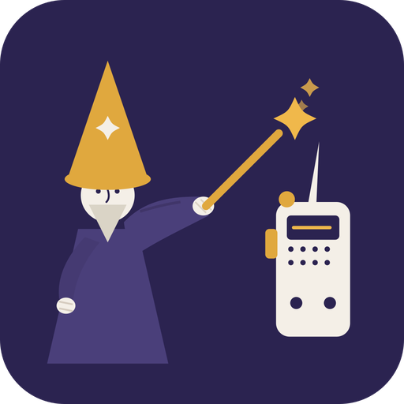
Every radio maker ships its own programming software, with its own file format, its own channel editor and its own idea of a zone. Own four radios and you keep four copies of the same repeaters, in four programs, and fix every typo four times. Codeplug Magic replaces that shelf of programs with one.
Four things, each with one job. Knowing which one owns what makes the rest of this guide obvious.
| Piece | Where in the app | What it owns |
|---|---|---|
| Channel | Channels | One frequency pair with its mode, tones or DMR settings, and both a long and a short name. Shared by every codeplug and every radio. |
| Channel list | Zones/Groups | An ordered group of channels. On the radio it becomes a zone, bank or memory group, depending on what that radio has. |
| Codeplug | Codeplugs | A name, an ordered set of channel lists, any scan lists, and one radio profile at a time. |
| Radio profile | Radio Profiles | One physical radio you own: its model, and that radio's menu settings (display, sounds, APRS, DMR ID…). |
A channel describes the repeater, not your radio. A DMR repeater is still a DMR repeater when you're holding an analog handheld; the handheld simply can't use it. So Codeplug Magic never asks you to keep a separate “UV-5R channel list”. You keep one library, and each radio takes what it can when you program it.
That's also why a channel carries two names. Radios with room for 16 characters show the long one (“AC0KC Fort Lupto”). A radio that can only show 7 shows the short one (“AC0KC”) rather than a chopped-off stump of the long name.
If you own two FT5Ds set up differently (one for hiking with APRS beaconing, one for the house), make two profiles. The profile carries that individual radio's menu settings, so the codeplug can stay the same while each radio keeps its own personality.
Everything starts in Channels: one table of every repeater and simplex frequency you use, whatever radio it's for. Fill it once from RepeaterBook, a file, or by hand.
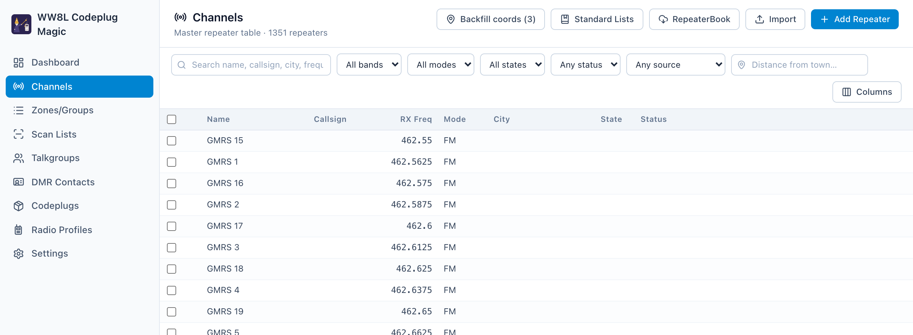
Four buttons at the top fill the library:
| Button | What it does |
|---|---|
| RepeaterBook | Searches RepeaterBook from inside the app and imports the repeaters you tick. |
| Import | Reads a file: a RepeaterBook export (CSV or JSON), a CSV from CHIRP or anything else, or a Codeplug Magic channel backup. |
| Standard Lists | Adds ready-made service channels: GMRS, FRS, MURS, Marine VHF, NOAA Weather and CB. |
| Add Repeater | Enter one by hand. Type a city and its coordinates are filled in for you. |
Get a free token from RepeaterBook (API Apps & Tokens on their site) and paste it into Settings → RepeaterBook. Then click RepeaterBook on the Channels page and do the following:
Repeaters already in your library are marked. Importing one again refreshes it instead of making a copy. RepeaterBook limits how often you can search, so the dialog shows how many searches you've used this hour.
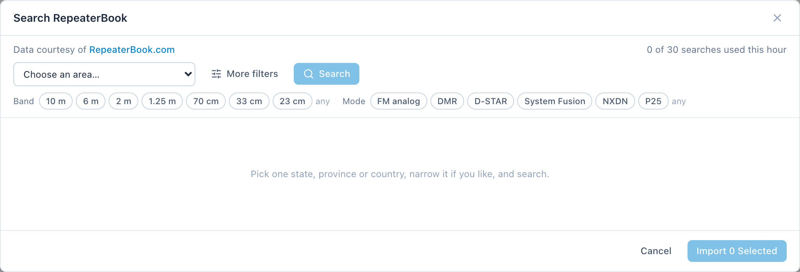
A RepeaterBook export is recognised and goes straight to a preview. Any other CSV, from CHIRP for example, opens the column mapper first. The app guesses which column is which and shows you sample values from each, so you can confirm a column really holds frequencies before anything is imported. Anything left as Not imported is skipped.
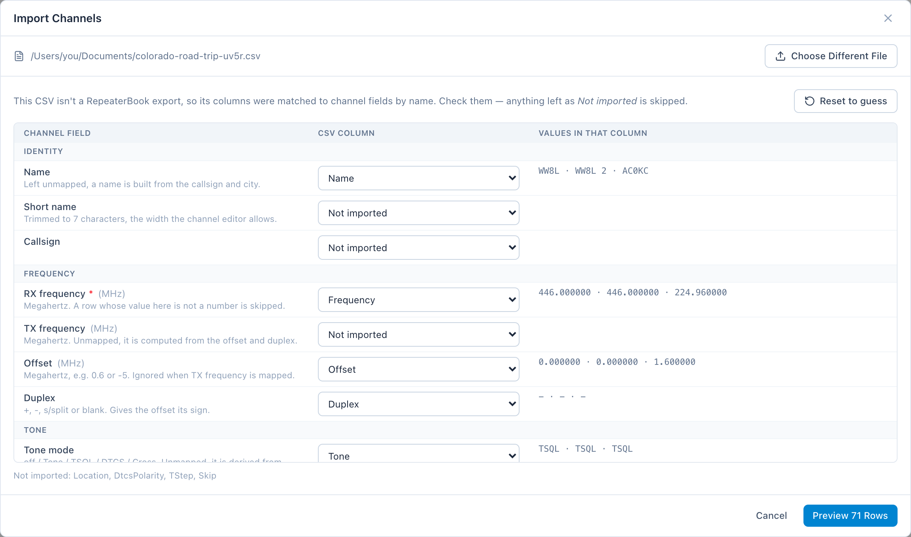
Click Preview to see every row as it will be imported, then Import. Channels you already have (same name and frequencies) are skipped, not merged, so importing the same file twice does no harm.
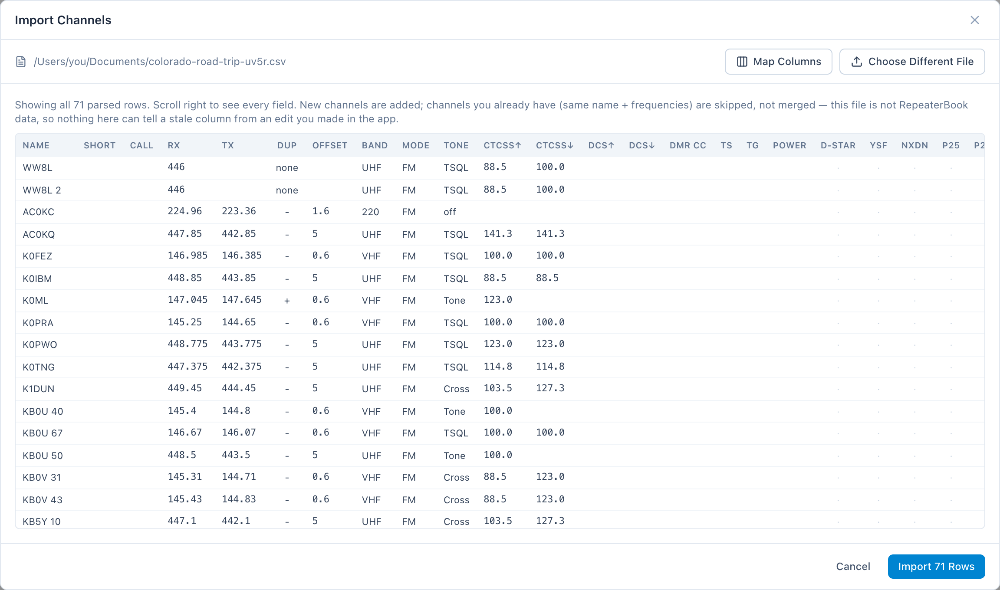
For the services everyone programs the same way, Standard Lists adds the whole set in one go. Tick Also create a channel list to get a ready-made Zones/Groups list too. Channels already in your library are skipped, not duplicated.
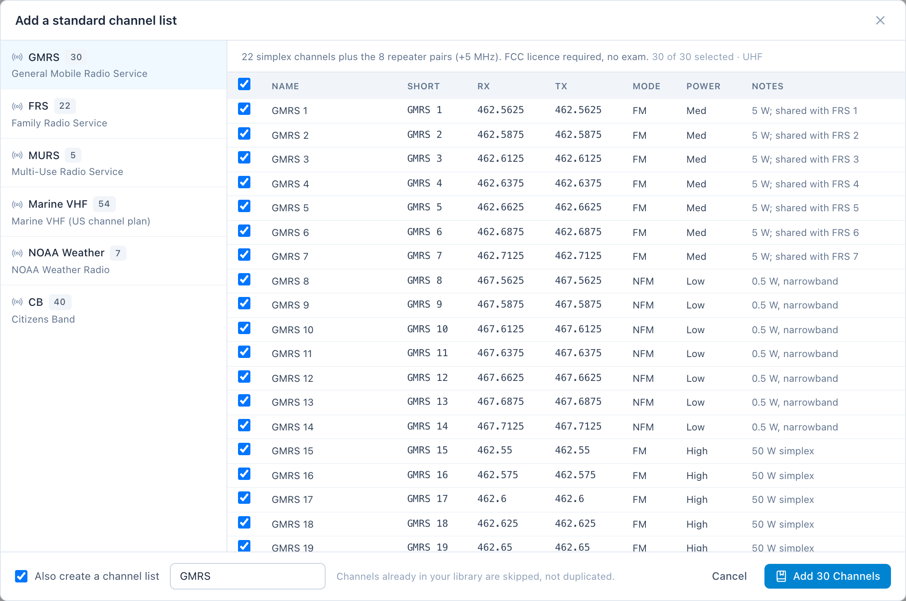
Zones/Groups holds your channel lists. Select channels on the Channels page and click Add to channel list, or open a list and use Add Channels. Drag rows to set the order. The order here is the order on the radio.
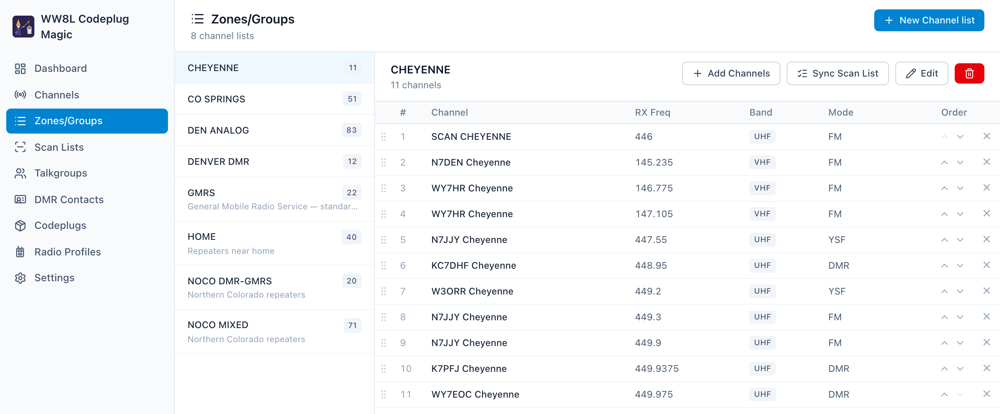
DMR needs two more kinds of data: the talkgroups each repeater carries, and the caller-ID list that puts a name on the screen when someone keys up. Both live in the same database and are shared by every DMR radio you own.
The Talkgroups page is your talkgroup library. Click BrandMeister to pull the current BrandMeister list. Import reads a CSV for other networks, and New Talkgroup adds one by hand.
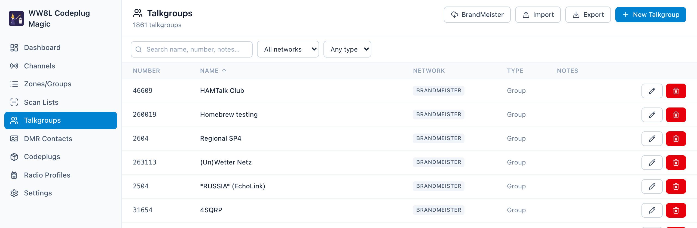
Open a DMR repeater on the Channels page and scroll to Talkgroups on this repeater. Add each talkgroup it carries, with its timeslot. A radio can hold only one talkgroup per channel, so each assignment becomes its own channel on the radio, and the panel tells you how many that will be.
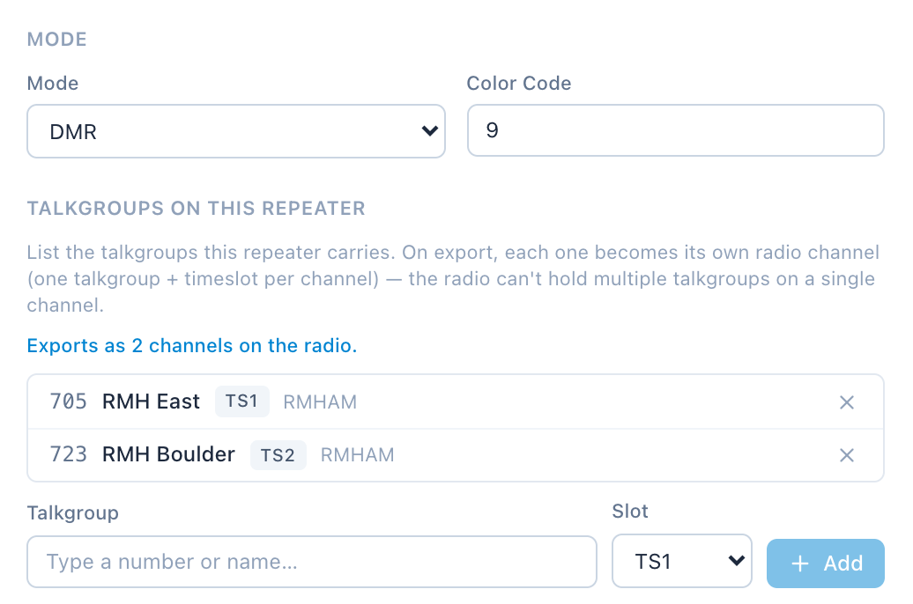
DMR Contacts keeps a local copy of the RadioID.net user list (over 300,000 operators). Click Refresh from RadioID.net now and then to update it. Most radios can't hold the whole list, so you choose what goes in:
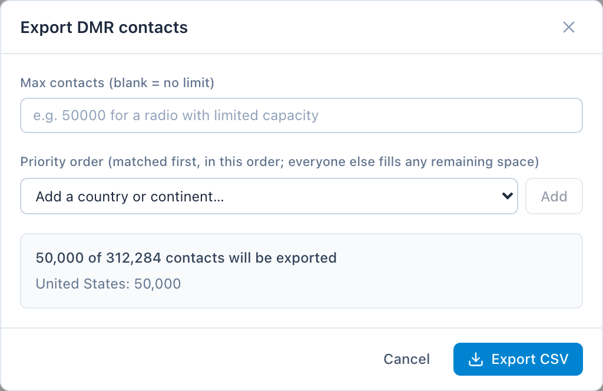
Make a profile for every radio you'll program. You do this once per radio, not once per codeplug.
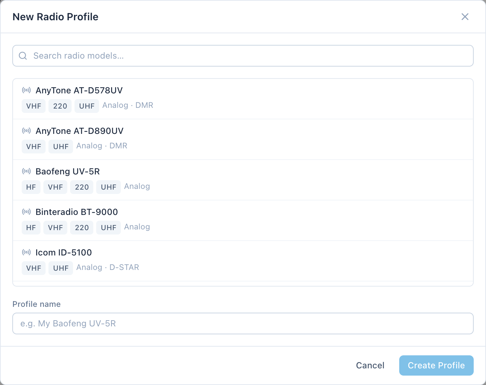
The profile editor's Settings tab holds that radio's menu settings, grouped the way the radio groups them. The quickest way to fill it is to read the radio itself:
Change what you like and click Save. The Capabilities tab shows what the model supports: memory count, name length, zones or banks, and bands.
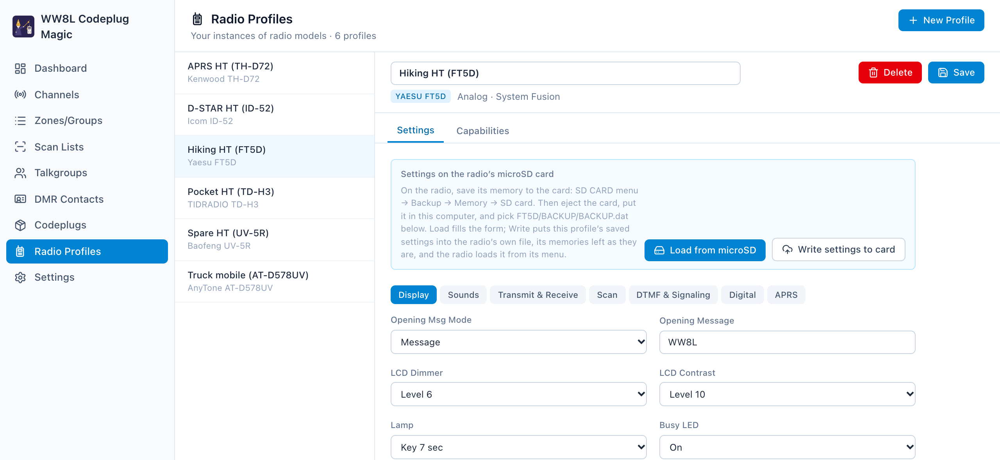
A codeplug is a short list of channel lists in the order you want them on the radio. Build it for a purpose (a trip, home, an event), not for a radio.
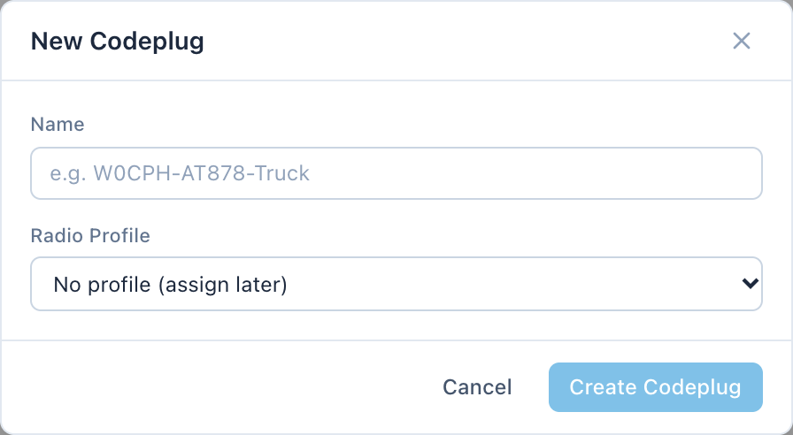
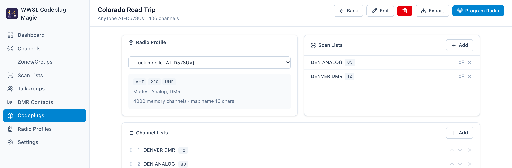
A codeplug points at one radio profile at a time, and you can change it whenever you like. Build a codeplug once, then program the truck's mobile, your handheld and the spare you lend out from it, switching the profile between each.
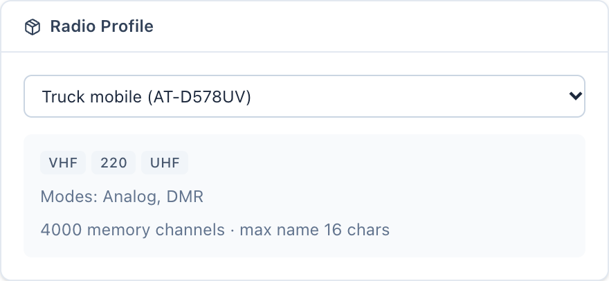
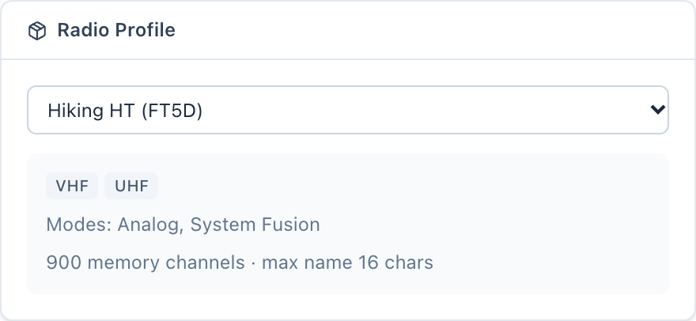
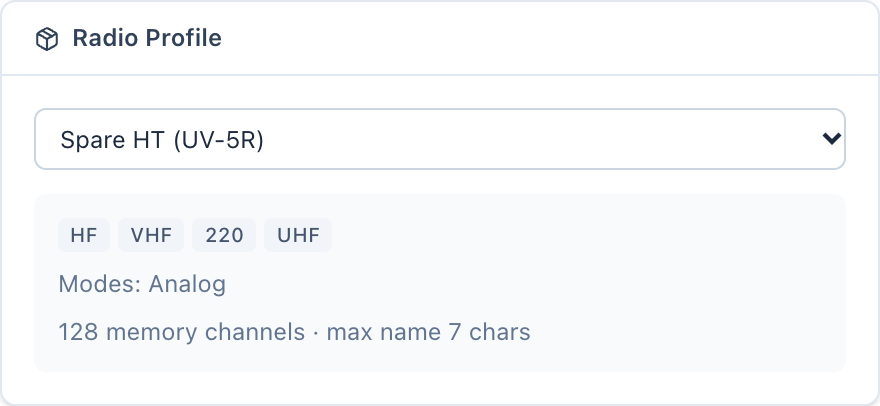
Without a profile, Export and Program Radio stay disabled. The app needs to know the target radio before it can fit anything to it.
The figures that follow are the real previews for the “Colorado Road Trip” codeplug: 106 channels across three lists, mixing analog FM, DMR, System Fusion, D-STAR and P25 repeaters on 6 m, 2 m, 1.25 m and 70 cm.
The AnyTone speaks analog and DMR, so DMR repeaters go in. Each one becomes one channel per talkgroup you've assigned to it. The three channel lists become three zones and both scan lists come along. It can't use the System Fusion, D-STAR or P25 repeaters, or the 6 m one below its 136 MHz range, so those 19 are skipped, each with its reason.
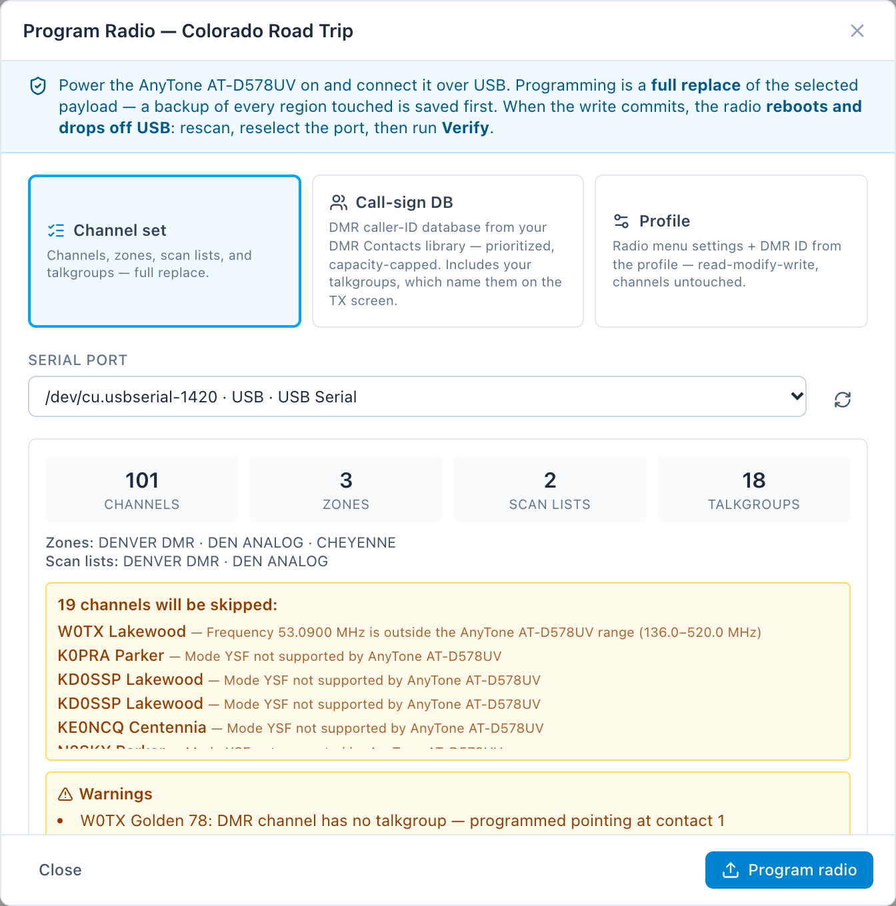
Switch the profile to the FT5D and open Program Radio again. Now System Fusion is in and DMR is out. The FT5D's receiver also covers 6 m and 220 MHz, where its transmitter can't go, so those six channels are programmed receive-only: you can listen to them, and the radio won't key up on them. With the card in the computer, the app finds it and offers Write to “FT5D”.
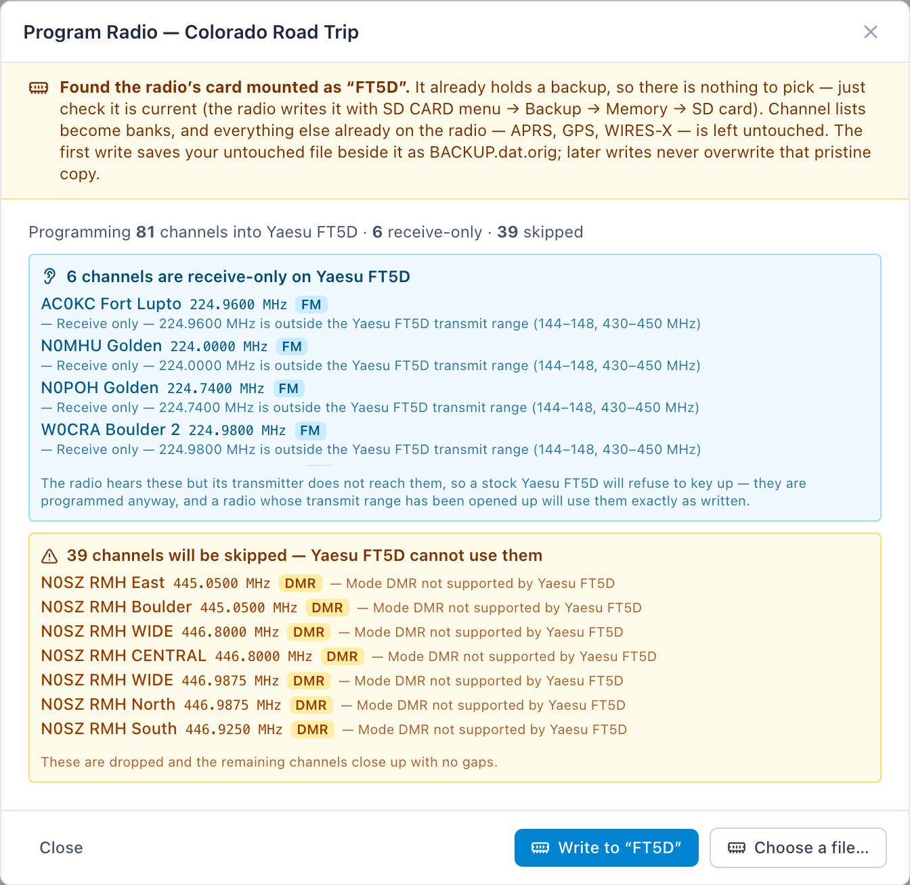
Switch once more. The UV-5R is analog only, so every digital repeater is skipped. Its 7-character display gets the short names: “AC0KC” instead of “AC0KC Fort Lupto”. With no banks, the lists are laid out one after another in a single run of memories.
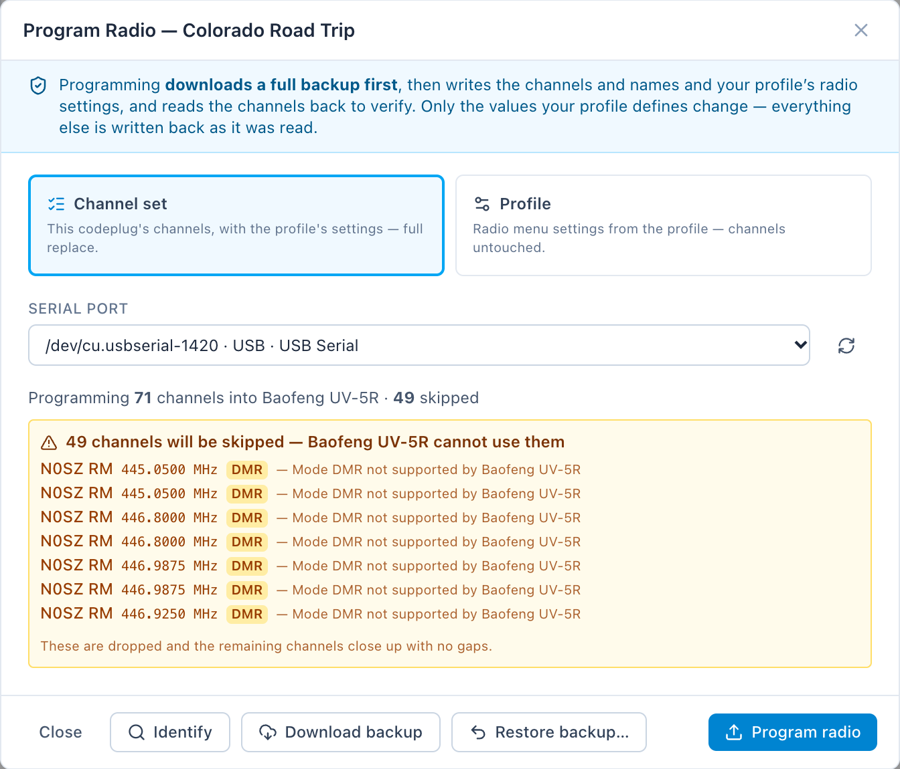
| Channel | Mode · MHz | AT-D578UV | FT5D | UV-5R |
|---|---|---|---|---|
| AC0KC Fort Lupto | FM 224.960 | IN AC0KC Fort Lupto | RX ONLY AC0KC Fort Lupto | IN AC0KC |
| W0TX Lakewood | FM 53.090 | SKIPPED below 136 MHz | RX ONLY W0TX Lakewood 09 | IN W0TX 09 |
| K0PRA Idaho Spri | FM 145.250 | IN K0PRA Idaho Sp V | IN K0PRA Idaho Spri | IN K0PRA |
| N0SZ Boulder 2 talkgroups | DMR 445.050 | IN ×2 N0SZ RMH East U N0SZ RMH Boulder | SKIPPED no DMR | SKIPPED no DMR |
Names ending in a letter or number (“V”, “09”) were marked by the app to tell apart two channels that would otherwise have had the same name on that radio. See Chapter 8.
Every time you Export or Program Radio, the codeplug is fitted fresh to the profile's radio. Nothing is stored per radio, so switching back and forth never leaves anything stale behind.
| Situation | What the app does | What you'll see |
|---|---|---|
| Mode the radio doesn't have (DMR on an analog radio, Fusion on an AnyTone…) | The channel is skipped. | Listed under will be skipped, e.g. “Mode DMR not supported by Yaesu FT5D”. |
| Radio can hear it but not transmit (GMRS, 220, 6 m, marine, NOAA, air band) | Programmed receive-only, not dropped. Where the radio has a per-channel transmit inhibit, it is set. | Listed under are receive-only with the radio's transmit range. |
| Outside the receiver too | Skipped, never written into an empty slot. | “Frequency … is outside the … range”. |
| Gaps left by skipped channels | The remaining channels close up with no empty memories. On radios with fixed-size zones, they close up within each zone. | “These are dropped and the remaining channels close up with no gaps.” |
| Channel lists | Become zones (AnyTone, MD-380, BT-9000), banks (FT5D, ID-5100), or memory groups (ID-52, TH-D75). Radios with none get one flat run in list order. | The zone count and zone names in the preview. |
| DMR repeater with talkgroups | One channel per talkgroup and timeslot, named with the talkgroup. When the long name plus talkgroup won't fit, the short name is used instead. | Repeater “N0SZ Boulder” with talkgroups RMH East and RMH Boulder becomes “N0SZ RMH East” and “N0SZ RMH Boulder”. A DMR channel with no talkgroup is flagged under Warnings. |
| Name length | Uses the long name if it fits; otherwise the short name, then cuts it to the radio's limit. | “AC0KC Fort Lupto” on 16 characters, “AC0KC” on 7. |
| Two channels, same name | Adds the band letter (U/V…); for two on the same band, the frequency's first two decimals (“09” for 53.09); as a last resort, a counter. | “K0PRA Idaho Sp V”, “W0TX 09”. |
| Cross-tone channel on a radio without cross-tone | Keeps the transmit tone so you can still open the repeater, and drops the receive side. | The channel is programmed; squelch opens on carrier. |
| Menu settings | Taken from the profile you selected. Blank settings are left as the radio has them. | On microSD radios the settings ride in the same file as the channels. |
Export shows the same fit as a table: every channel, its frequency and mode, and whether it's included or excluded and why. Use it to sanity-check a new radio before you plug it in.
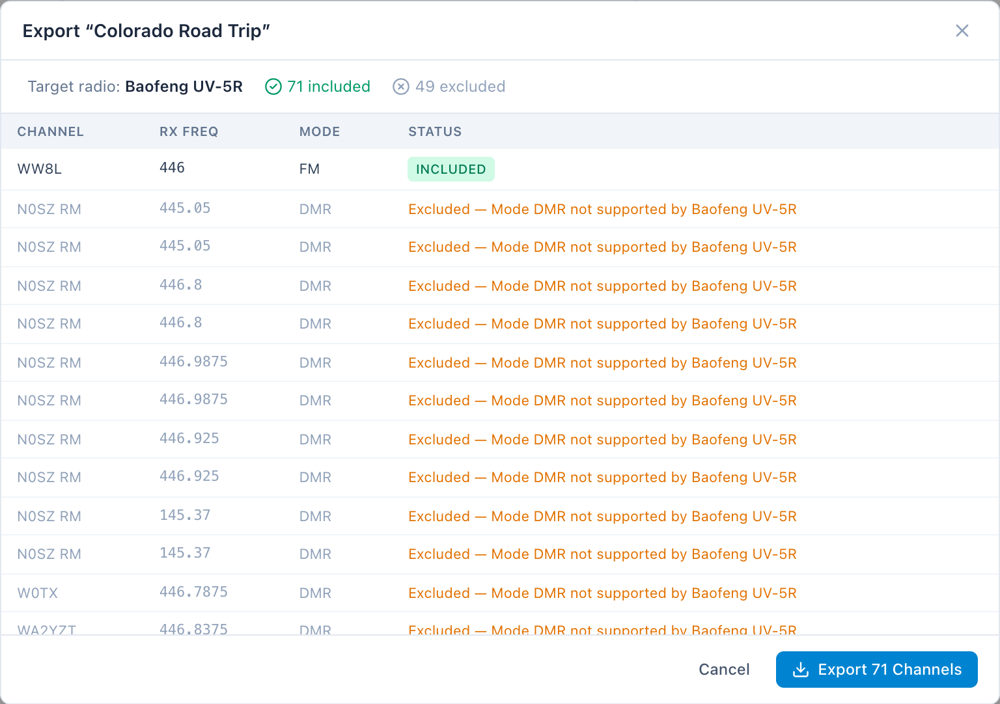
The workflow is the same for every radio. Only the last step differs: a cable, the radio's own microSD card, or a file.
| Radio | Modes | Connection | Notes |
|---|---|---|---|
| Baofeng UV-5R | Analog | USB programming cable | 128 memories, flat. Channels and settings. |
| TIDRADIO TD-H3 | Analog | USB programming cable | 200 memories. Its Program dialog adds a Radio Options tab. |
| AnyTone AT-D890UV | DMR + analog | USB | Channels, zones, scan lists, talkgroups, settings, call-sign database. |
| AnyTone AT-D578UV | DMR + analog | USB | 4000 channels in 250 zones; settings incl. APRS; call-sign database. |
| TYT MD-380 | DMR + analog | USB (the radio itself) | Zones of 16, talkgroup contacts, scan lists. |
| Binteradio BT-9000 | Analog | USB programming cable | 960 memories in 15 fixed zones. Also sold as Radtel RT-950 Pro. |
| Kenwood TH-D72 | APRS + analog | USB | 1000 memories; menu settings. |
| Kenwood TM-D710 | APRS + analog | Serial, operation-panel port | Programmed one memory at a time; settings incl. APRS. |
| Icom ID-5100 | D-STAR + analog | Data cable | 1000 memories in named banks A–Z; settings in the same upload. |
| Yaesu FT5D | Fusion + analog | microSD: BACKUP.dat | 900 memories in 24 banks; settings. |
| Yaesu FTM-300DR | Fusion + analog | microSD: CLNFTM300D.dat | 999 memories, no banks; one M-GRP memory group; settings incl. APRS. |
| Icom ID-52 | D-STAR + analog | microSD: .icf | 1000 memories in 100 groups; settings. |
| Kenwood TH-D75 | D-STAR + APRS + analog | microSD: .d75 | 1000 memories in 30 groups; settings incl. APRS. |
| Anything else | — | Export a CHIRP CSV | Program it with CHIRP. |
Choose the serial port and click Program radio. Every cable write saves a backup of the radio first. Where the radio offers them, Identify, Download backup and Restore backup… sit beside it. AnyTone radios reboot after a write; rescan the port and run Verify.
On the radio, save its backup to the card from its SD menu. Put the card in the computer and open Program Radio: the app finds the card, patches the file the radio wrote, and keeps the untouched original beside it. Put the card back and load it from the radio's menu. The dialog shows the exact menu steps for your model.
Because everything lives in one database, backing up is one file. Radios are backed up too, automatically, every time the app reads or writes them.
Go to Settings → Database and click Back up database…. The backup holds every channel, list, codeplug, radio profile, talkgroup and DMR contact.
Before writing anything, the app lists what the file will contain and flags anything worth thinking about before you share it: your call sign, DMR ID and APRS positions in your radio profiles, and other operators' names from RadioID.net. Then you choose where to save it.
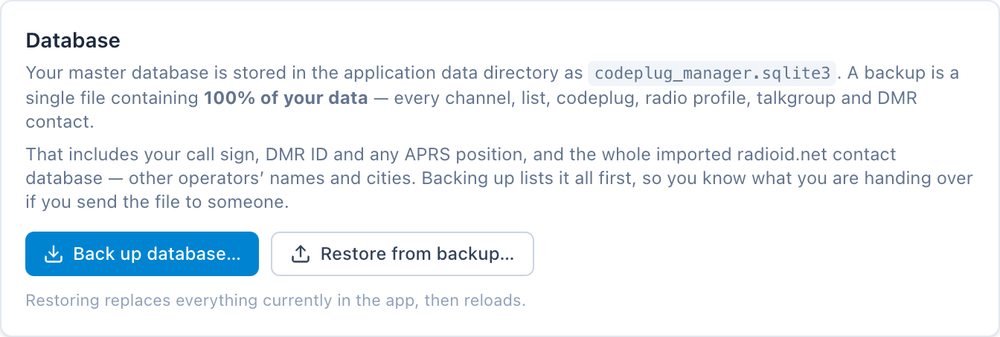
Restore from backup… replaces everything currently in the app with the backup. Before it does, it saves your current data to a separate file, so a restore can be undone. This is also how you move to a new computer: back up on the old one, restore on the new one.
Every time the app reads a radio or writes to one, it first saves a copy of that radio's memory. That's what lets you put a radio back exactly as it was. These copies are never deleted for you. Under Settings → Radio backups you can choose how many to keep per radio and clean up older ones. The copies hold each radio's own data, including your call sign, DMR ID and any stored position, unencrypted, so treat them like the database backup.